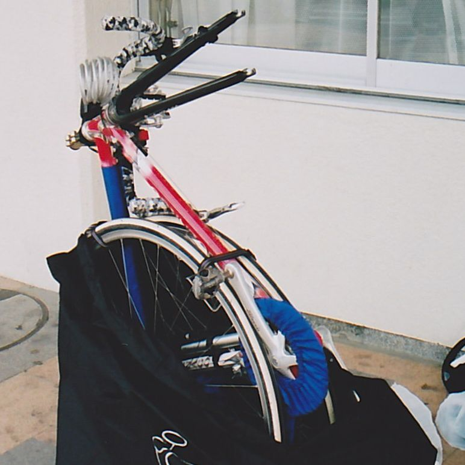

輪行に適した自転車
- 前後輪を簡単に脱着できるスポーツ用自転車（ロードバイク・クロスバイク・マウンテンバイク）は輪行に向いている。
- 特に軽量なロードバイクは担いでも重くないため輪行に最適である。 ただしフレームを傷つけられない超高級ロードバイクは辞めておいた方が良いかもしれない。
- 泥除けのある自転車でも長距離ツーリング前提のランドナーやスポルティーフは、 簡単に泥除けを脱着（または分割）できる仕組みになっているため輪行に向いている。
輪行のメリット
- 片道を電車とすることで、往復コースや周回コースと比べて2倍遠い場所に行ける。2倍遠くまで行けるなら目的地の候補が格段に増えることになる。
- 日帰りの場合でも時間に余裕ができ、その分を食事や観光にあてることができる。 往路は早朝から午前中の涼しい時間を利用して走り、14時ぐらいから食事や観光をする。 その後ゆっくり温泉に入って疲れをとってから電車に乗って帰るのが個人的にはベスト。
- 一度登った峠を再び登らなくても良い。世の中にはヒルクライムを楽しむ方もいるので一概には言えないが、 個人的には一度通ってその勾配や距離が分かっている峠は二度と登りたくない。
- 東京駅から50kmと100kmの範囲を示す（注：走行距離ではない）。
必要な装備

- 輪行袋
-
自転車を電車に持ち込むためには、専用の袋（輪行袋）に入れて手荷物として持ち込む必要がある。
- 自転車の種類によって利用可能な輪行袋が変わるため、自転車に合ったモノを選定する必要がある。
-
これまで2種類の輪行袋を使用してきたが、現在はオーストリッチのL-100という超軽量タイプの輪行袋を使用している。
ボトルケージに収まるサイズになるため携帯性は抜群で、
超軽量型ということで耐久性を心配していたが10年以上問題なく使えている。
また袋の内側底に自転車を収納する向きが分かり易く図示されているため、収納時に迷わずに済む。
-
輪行袋は前後輪を外してコンパクトに収納するタイプと前輪のみを外して収納するタイプがあるが、個人的には前者をお勧めする。
- 後者は、クイックリリースで前輪を外して袋に入れるだけなので圧倒的に簡単に収納できるが、 袋に入れた状態でも大きなサイズになるため、乗客の多い車内に持ち込むのは厳しいのと、駅の乗り換えが大変になる。 サイズ的にエスカレータ利用は無理で、エレベータや階段でもかなり邪魔な感じになってしまう。
- 前者は、前後輪を外してフレームを縦にして袋に入れるため、圧倒的にコンパクトになる。 乗客の多い車内でも邪魔な感じにならないし、コンパクトで持ち運びやすいため駅の乗り換えが楽にできる。 後輪の脱着は手間が掛かるし手も汚れることになるが、慣れてしまえば難しくない作業だし、 その後の持ち運びの容易さを考えれば、前者一択と感じる。
-
輪行袋に付属する肩掛け紐（ショルダーベルト）をフレームに装着することで肩に担いで運べるようになる。
輪行袋自体に紐が着いているタイプもある。
- 固定紐（中締ベルト）
-
前後輪でフレームを挟み込んで固定するために、3本の紐（中締ベルト）が必要になる。輪行袋に同梱されていることが多い。
- リアエンド保護金具
-
リアディレイラーとその変速用ワイヤーが地面側になるため、保護用の専用金具をリアエンドに装着する必要がある。
ロードバイクとマウンテンバイクでリアエンド幅が異なるため、自転車に合った金具を用意する必要がある。
- チェーンリングとスプロケットの保護カバー
-
歯車の歯先がむき出しだと危険なのと油が他に付着するのを防ぐために保護カバーを装着する。
- 最近はディレイラーやチェーンを含む全体を覆うタイプもあるらしく油汚れを防ぐ効果がありそうだが、 携帯性と装着し易さがどの程度かは利用したことが無いため分からない。
- フレーム保護カバー
-
前後輪でフレームを挟み込んで固定するためホイールとフレームが接触する可能性がある。
フレームに保護カバーを巻き付けることでフレームが傷つくリスクが減る。
事前に必要枚数を確認して携行する（経験的には3,4枚あれば十分）。

- 手拭きor作業用手袋
-
チェーンを避けて後輪を脱着する際に手に油が付着する。
素手で作業するなら手を拭くモノが必要だし、かさばらない薄い手袋を利用するのでも良い。
- 夜間走行用ライト
- 昼間だけ走る計画でも、電車で帰るのが遅くなって最寄り駅から家まで暗い中を走る場合も多いため夜間走行用ライトは必要。 最寄り駅から迎えの車に積み込んで帰れるなら不要かもしれない。
- 地図
-
道を間違った時のダメージが大きいため、紙もしくはスマホの地図は必須。
- 道を誤った場合には計画したルートに復帰する必要があり、余計な道を往復する時間的ロスだけでなく、 起伏があった場合の体力の消耗と無駄に来た道を戻る精神的ダメージが大きい。
- 夏にスマホの地図アプリを利用する場合、屋外炎天下でスマホが使用し続けられるかどうかの事前確認が必要。
- バッグ
-
輪行に必要なモノを自転車に積載するためのバッグも必要になる。
- 輪行に必要なモノは最終的には2つもしくは1つの袋に収まる。
- 輪行袋セットをドリンクホルダーに装着すれば保護カバーセットをサドルバッグに収納できる。
写真はスペシャライズドのサドルバッグ。
- 個人的にはフロントバッグに輪行袋セット+保護カバーセットを収納することが多い。
写真はリクセンカウルのフロントバッグ。
- 輪行に必要なモノは最終的には2つもしくは1つの袋に収まる。
- 交通費
- 電車の本数の少ない駅から乗車する際に、自転車の収納に手間取って発車時刻ぎりぎりになることもある。 慌てず円滑に乗車するために、 交通系ICカード（最低でも入場できる残高が必要）・現金（高額でない紙幣が必要）・交通系モバイルアプリ（通信圏外でも利用できる残高が必要） のいずれかを事前に準備しておく。
手入れ
油が付着するカバー類は洗浄してから片付ける。
- 用意するモノ
-
- バケツ
- お湯（お風呂で洗うのが手っ取り早い）
- 弱アルカリ性の洗濯石鹸（緑色のウタマロ石けん）
- 洗い方
-
- バケツにお湯を入れ、汚れた部分に石鹸を付けて手もみ洗い
- 石鹸を洗い流してから干す